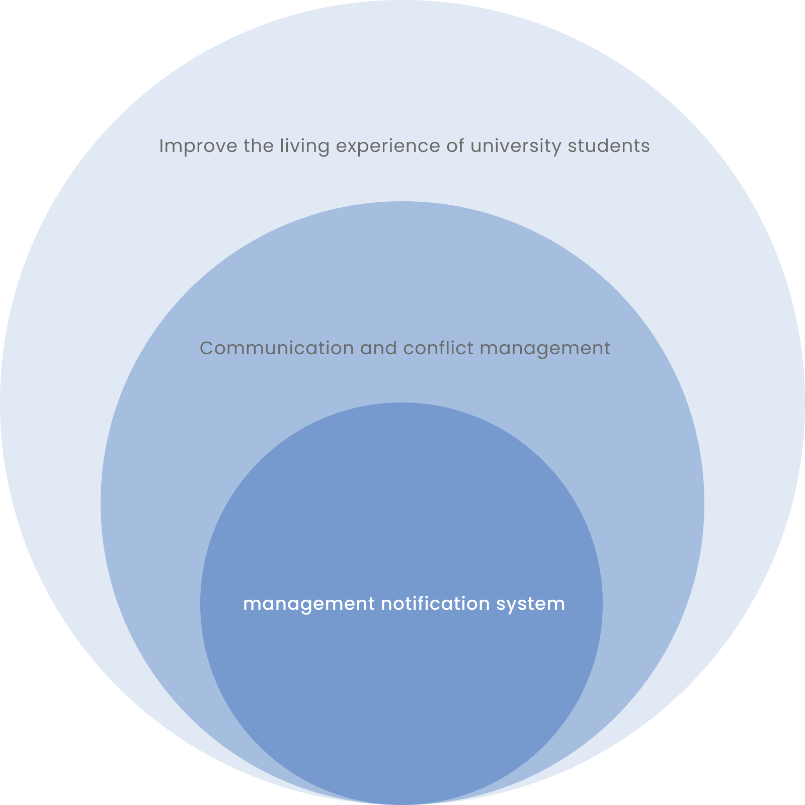
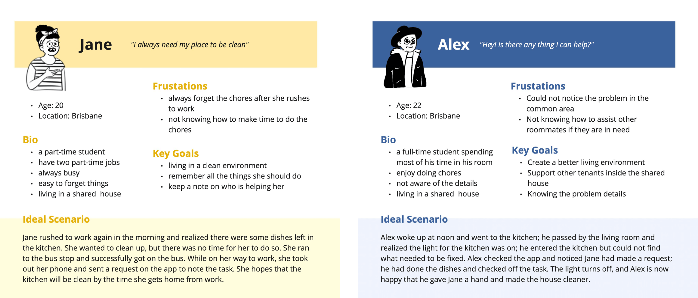
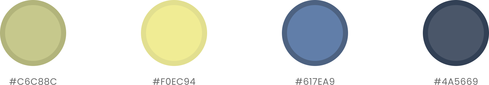
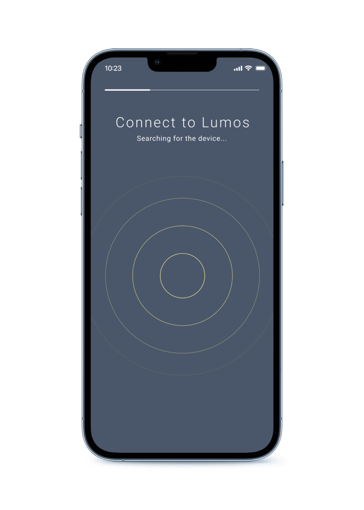
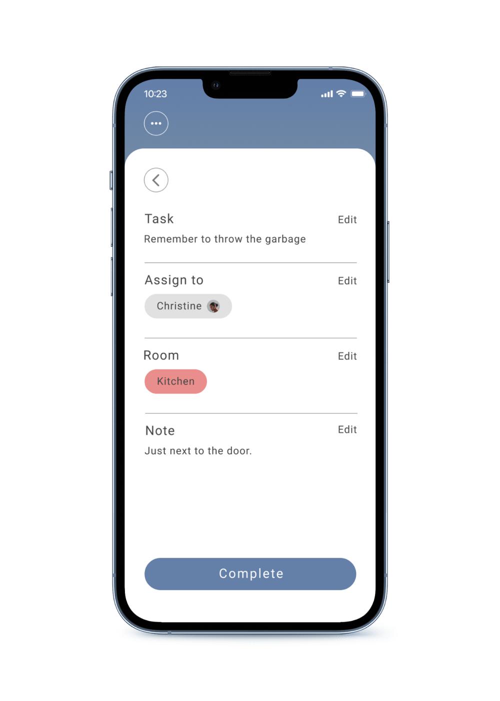
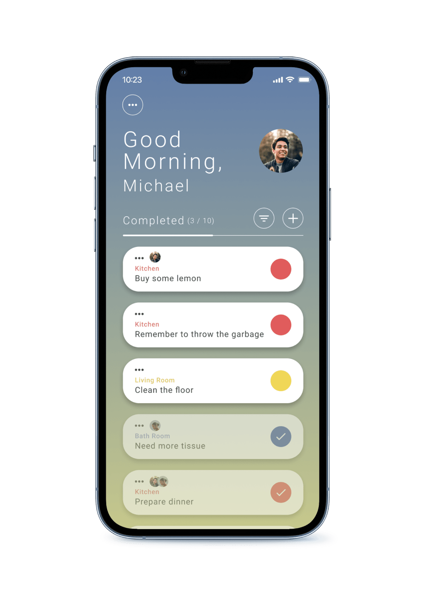
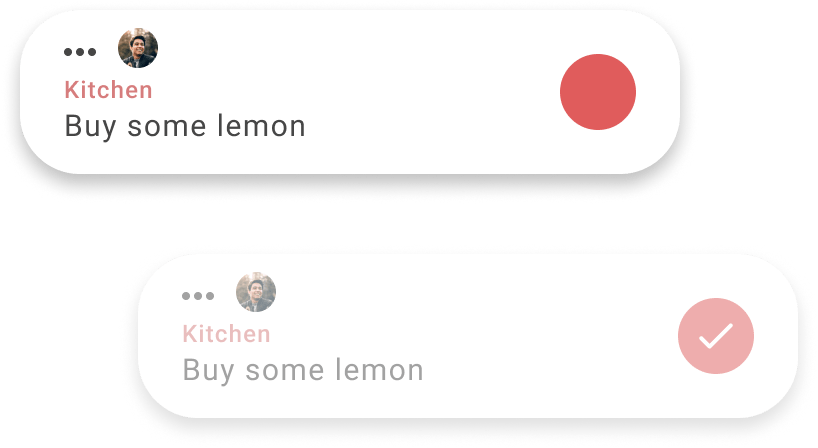
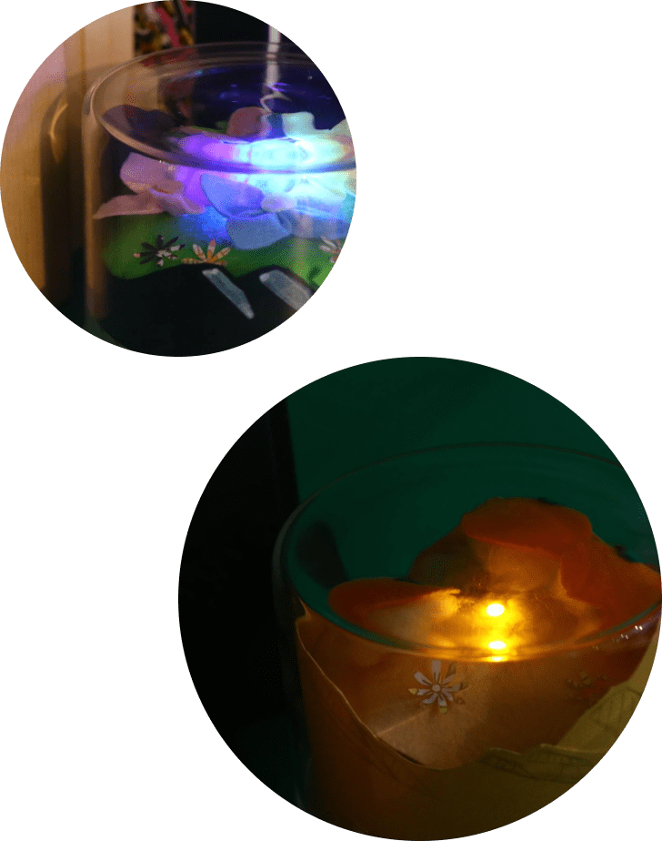

Overview
Lumos aims to enhance the living experience for university students by introducing a new approach to task management in shared accommodations, which facilitates communication and task management within shared living spaces.
Disclaimer: Lumos Check is a conceptual design that was proposed in a studio project.
ROLE
User Research, Visual Design, Visual Design, Programming
DURATION
3 months (2023)
TOOLS
Figma, Yo-Yo Machines, Visual Studio Code, Arduino IDE
Look into the Domain
In the initial research, the team investigated the issues that arise in a shared house setting. The team extracted crucial insights and potential project focuses from the interviews, and turned the focus to communication and conflict resolution:
・Most participants have already developed certain behaviors to
resolve issues.
・Conflict could arise in various scenarios, such as noise
disturbances and the cleanliness of shared spaces.
・The existing solutions are mostly ineffective, which leads to a
tendency to avoid addressing the issue.
Iteration
After the first user testing and feedback gathering, the team concluded that the initial proposal could not achieve the desired aims. The early design stage limited the product's value and failed to generate a positive user response; the device had no real connection to university students living in a shared house, which encouraged the teams' discussion of developing a design that users could have deeper interaction in their daily life.
How can a design be seamlessly integrated into users' lives?
The second round of research to gather data and feedback from our target audience, which further investigated how our intended users interacted with the space, their preferences, and their daily routines. Finally, we refined the design into a management notification system.

Persona
University students aged 18 to 24 who seek a deeper understanding of Australia's endangered plants.

Visual Design
Color Pallate

Final Design
A chore management system combined with a physical device creates a comfortable environment for effective communication, streamlined task coordination, and ethical cohabitation among housemates.
Set up the devicein the shared accommodation.


Create a task to highlight a chore.
Claim a task or join a task to contribute.


Mark the task to complete the chore.
View the light changesin the shared environment.
